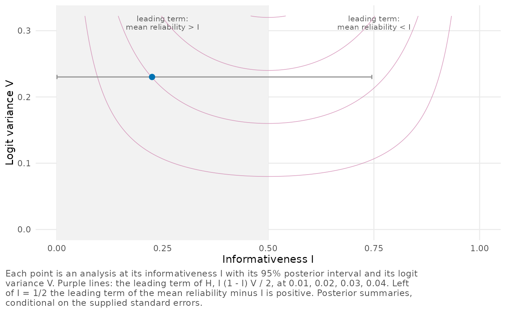

Places one or several analyses by their informativeness and their logit variance, with contours of the leading term of the dispersion and the half of the plane where the leading term of the mean reliability minus \(I\) is positive.
Arguments
- x
An object of class
reliability_posterior,reliability_draws,reliability_profileorprofile_comparison.- level
Probability content of the intervals of \(I\), a number between 0 and 1.
NULL, the default, uses the level of the fits.- contours
If
TRUE(the default), the contours of \(I(1 - I)V/2\) are shown.- ...
Must be empty.
Details
The dispersion depends on the whole profile, not on \(I\) and \(V\)
alone, so the contours are those of its leading term
\(\tfrac12 I(1-I)V\) (Lee, 2026, Proposition 2). Left
of \(I = 1/2\) the leading term of the mean reliability minus \(I\)
is positive; whether the exact difference is depends on the remainder,
which local_terms() bounds.
Examples
fit <- reliability_posterior(estimate, se = se, data = eight_schools)
plot_plane(fit)
